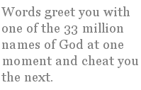

Chris Mooney-Singh
from Views from my Apartment
17
I remember days of constraint,
cowering before the ATM queue,
seeking a windfall of weekend cash
and scorched my fingers, tree frog-like
on a hot granite office and took refuge
in the chapel of her hands.
I have walked the so-clean streets
where one dropped carton would be
an inspiration, an art installation.
I have stood under the blue square
between skyscrapers wondering
why geometry outsells geomancy
and I have thanked tree-petal litter,
reminding chaos is natural, obligatory
like personal mess in an apartment.
Of course, anarchy is short-lived:
foreign workers in rubber boots
jump down like shadows on schedule
to whipper-snip and sweep away
uprisings — fast-spreading green domes,
leafy crowns hanging over boulevards.
.
.
19
Will we leave this place together?
I won’t think of it, just sip my tea.
This is the jumbo crossword
to be cracked, the solution
to the puzzle still to be found.
My new city is a forest made
from money pandan and foreign sand
mixed with political plans. Soon
we will own nothing, except
the fly-weights of our thoughts.
We will have nothing to remember
all this by — just a small plate
of leftovers inside a refrigerator.
It is a cold time-machine
slowing the mortality of milk.
Surely, we will come together, surely
it will happen — a rendezvous
at some boutique of light up the escalator
moving its clenched crocodile teeth
that we must ride to wake through sleep.
20
Thought bows to body. The dinner hour
calls woks to unite across the island —
ikan-bilis with blachan spice,
fish marinated in the South China Sea,
chapatti cross-drift and curry scent,
roasted smell of someone’s chicken rice.
All of me wants you arriving under the block.
I simply need your hand to wave hello,
then press the lift button — Floor Number 5.
I am ready to close these curtains
when the key to love clicks in the lock.
The Lion of Punjab Leaves from Platform 3
The two-stroke auto-rickshaw engine belches oil and smoke and adds its quota to the pall of Delhi smog. I am sitting in the back as if in the shadow of a giant cobra’s protective hood. My driver weaves between carts of pomegranates, bananas, apples, mangoes, papaya and guava. All are ready to be served with a piquant sprinkling of pink masala-salt. I have lost my westerner-fear of street germs and gained immunity from the local water, but I cannot stop to taste anything. I am heading for a railway platform where the station clocks are wound to any hour and trains are full of overdue relatives.
Late is also early and yesterday means tomorrow. I am more out of time than on time, as I fight my way into 2nd class Unreserved Carriage Number C3 of Sher-i-Punjab, the “Lion of Punjab”. Soon we will be shunting north out of Delhi. The red-coated coolies tried their best to get my business earlier, but I managed my own two bags and a guitar in a soft shoulder-case and slung them up onto the luggage rack.
This is not a please-and-thank-you country. It is a place of push and shove where the strong bluffs the small to get the lower berth. Mostly, greetings are done with the wobble of heads, the folding and namaste of hands. Words are reserved for the somewhat ritualistic gestures from an ancient culture that acknowledges caste, rank and position. Hello brother, hello sister, hello Sahib, hello vegetable wallah. Words greet you with one of the 33 million names of God at one moment and cheat you the next. Words are not to be taken seriously or at face value. One must train oneself to be less gullible and to read the sub-text of hand-gestures and the subtle mudras of eye-muscles telling the opposite of the words. Smiles may be hooks or hidden agendas.
Living on and off for the last decade and a half in India has taught me valuable survival skills and re-geared my poetry to accommodate the tragic-comic nature of the sub-continent shaped like a tear or a sacred cow’s udder. As the train picks up momentum, I look out the window and as always, I am struck by a culture in transition:
A bag of Surf on a washerman’s rock,
a cocoa cola stand near the coconut stall,
low-flying jets, vultures in a flock,
political anger written on a wall.
Over the years, I have noticed the creeping Western influence, particularly since the advent of satellite dishes on the temple skyline which is radically altering the billion-plus minds of this place with western beats, fashion and re-runs of “The Bold and the Beautiful,” glib postures for a globalised world. Yet, India’s a computer wobbling on a rickshaw desperately trying to upgrade itself from developing country status. To do so, every day, it willingly sacrifices many of the old values and traditions that give this culture distinction and uniqueness. Education is not about culture and learning, but about economic opportunities abroad. The dream of vast numbers of Indians is to leave. Most cannot understand why westerners like me spend years tracking through Indian streets in search of history, music and poetry and old spice and perhaps the sense of easy community that my own western background lacks for me. *
My naïve childhood visions of the gentle East were rudely shattered years ago. The ancient texts and poems still evoke an idyllic world of forests, yogis in relaxed hermitages, mango-breasted maidens, nightingale sunsets, elegant temples and palaces, but that world is a fairy-tale of princes and princesses who exist only in the winter season wedding pavilions, gaudily lit up with electric lights and doorways of marigold garland-strings: the princes are bound for pavilions at dusk, decked out like courts of royal blood. Their ranis wait on rented lotus thrones while a thousand guests mill and gossip. That glorious fairy-tale existence is still a talisman for every Indian. It drives them on toward the desire for material wealth at any ethical cost. It puts Western clothes on the men, makes English part of the masala of language spoken here: kitcherie basha “mixed up language”. I am speaking to everyone in simple grains of rice and pulse made from Hindi noun and Punjabi slang in a soup of English.
One of India’s great talents is its ability to take on influences and transform them into their own version of reality as if they invented it. Of course, the world knows that it is one of the official state languages of the nation and now many of its major writers win Booker prizes with it and international poetry awards.
Ironically, as English makes more in-roads, Indians begin to lead a kind of double life. English denotes the modern and progressive and is fiercely encouraged amongst the striving middle-classes who equate English, the lingua franca of the world and commerce with personal progress. They are not wrong. However, traditional language and customs are increasingly being down-played. Less are studying original literatures, Indian classical music and other art-forms. They seem to hark back nostalgically to them after they have migrated elsewhere to the western world. Such trends are very evident in Punjab, an economically-progressive State, driven by its hard work-ethic rural economy and where at least one member of every family has someone settled abroad and most likely sending money back. This is where I am heading once again on the clacketing wheels of the Sher-i-Punjab roaring down the track to the land of bearded Singhs, meaning “lions”, who fought off Moghul emperors and then the colonizing Britons who tamed them eventually. Now the lions, tigers and jungles only exist in old photographs of the old Maharaja shooting parties. But still I look out the window, and follow the fields of mustard flowers that ripple forward to an unwavering sun, hoping to see what doors my eyes might open in the sugar-cane fields.
Chris Mooney-Singh (born 1956) is the founder of Poetry Slam™ in Singapore. Of Australian Irish descent related to Ned Kelly, Australia’s best known bushranger, he adopted Sikhism in 1989, Mooney-Singh has also published two poetry joint collections, two chapbooks, co-edited a poetry anthology, The Penguin Book of Christmas Poems, and has three spoken word CDs, the latest bein g Living in the Land of the Durian Eaters. Mooney-Singh also has poems published online at Times Online, Mindfire, Cezannes Carrot, Stylus, Umbrella Journal, The Loch Raven Review, Simply Haiku, Ghazalpage and Quarterly Review of Literature, Singapore (QRLS). His next collection, The Laughing Buddha Cab Company, will be published in December 2007. Mooney-Singh was a guest at the Austin International Poetry Festival, 2003, the Hong Kong Writers Festival, 2004 and the Kuala Lumpur Lit Festival (2007).
As Programme Director of Word Forward, a literary arts company teaching poetry and performance in schools he has performed his poetry and taught the art of writing and performing.
|

{kind=link}